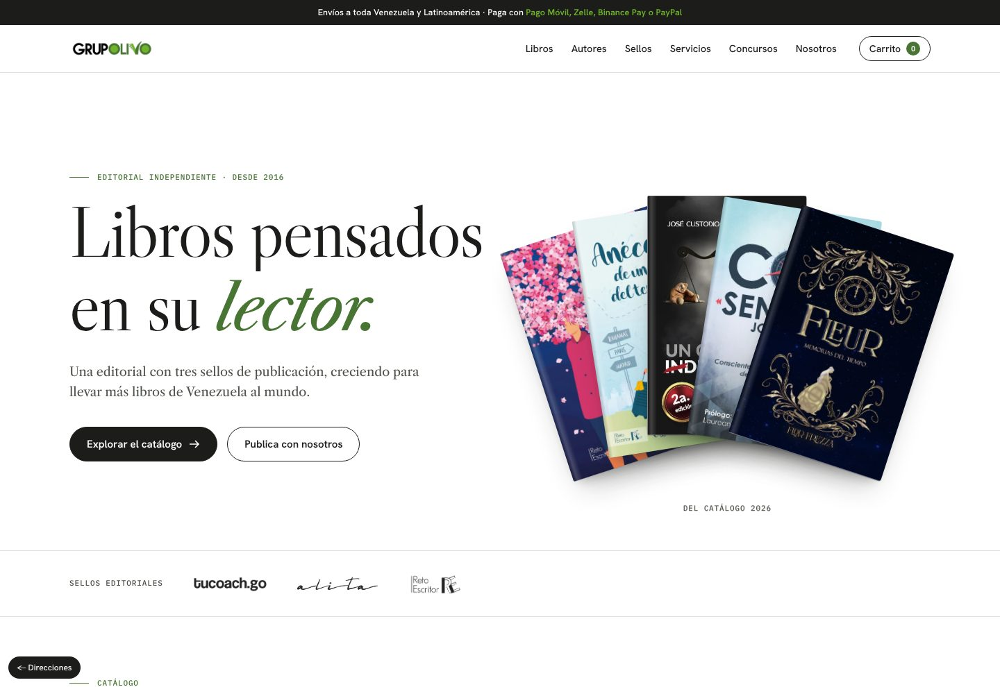
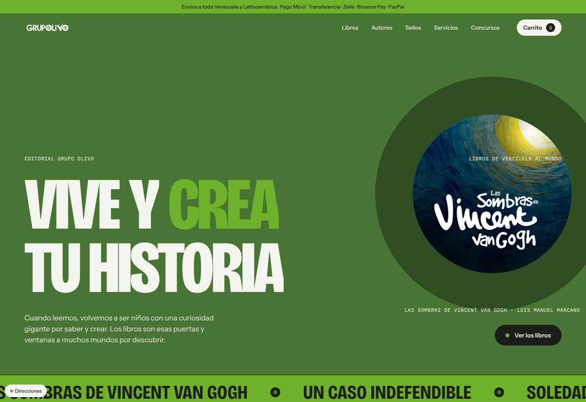
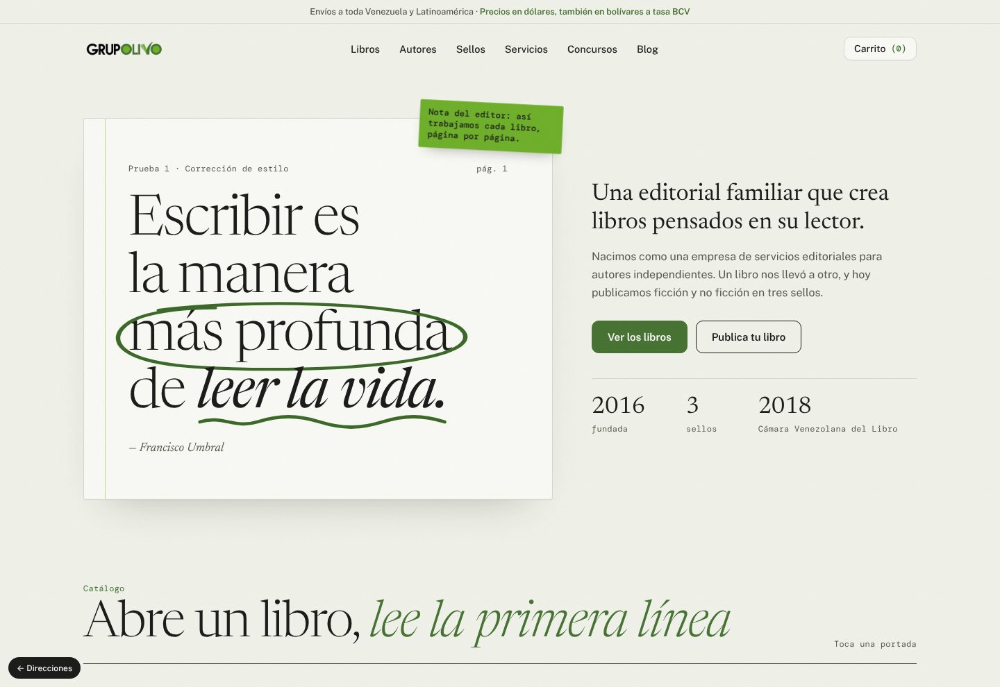

<title>Grupo Olivo · Direcciones</title>
<meta name="claude:viewport-fit-sides" content="cover">
<link rel="preconnect" href="https://fonts.googleapis.com">
<link rel="preconnect" href="https://fonts.gstatic.com" crossorigin>
<link rel="stylesheet" href="https://fonts.googleapis.com/css2?family=Libre+Caslon+Display&family=Bricolage+Grotesque:opsz,wdth,wght@12..96,75..100,800&family=Newsreader:ital,opsz,wght@1,6..72,400&family=Public+Sans:wght@400;500;600&family=DM+Mono&display=swap">
<style>
/* Selector de direcciones: una hoja de contactos de imprenta, tres pruebas lado a lado. */
:root{
  --bg:#F4F5F0; --card:#FFFFFF; --fg:#1C1C1B; --fg-2:#585C53; --rule:#DADDD3; --olive:#487434; --leaf:#70B12C;
  --sans:"Public Sans", system-ui, -apple-system, "Segoe UI", sans-serif; --mono:"DM Mono", ui-monospace, Menlo, monospace;
}
@media (prefers-color-scheme:dark){:root:not([data-theme="light"]){--bg:#151614;--card:#1E201C;--fg:#EEF0E9;--fg-2:#A6AB9F;--rule:#30332D;--olive:#8DC062;color-scheme:dark}}
:root[data-theme="dark"]{--bg:#151614;--card:#1E201C;--fg:#EEF0E9;--fg-2:#A6AB9F;--rule:#30332D;--olive:#8DC062;color-scheme:dark}
*{box-sizing:border-box}
body{background:var(--bg);color:var(--fg);font:400 16px/1.55 var(--sans);padding-left:max(16px,env(safe-area-inset-left,0px));padding-right:max(16px,env(safe-area-inset-right,0px))}
main{max-width:1180px;margin:0 auto;padding-block:48px 72px}
.top{display:flex;justify-content:space-between;align-items:end;gap:20px;flex-wrap:wrap;border-bottom:1px solid var(--fg);padding-bottom:22px;margin-bottom:36px}
.mono{font:400 12px/1.4 var(--mono);letter-spacing:.02em;color:var(--fg-2)}
h1{font:600 clamp(30px,4vw,44px)/1.1 var(--sans);letter-spacing:-.02em;margin:8px 0 0}
.top p{max-width:52ch;margin:0;color:var(--fg-2)}
.grid{display:grid;grid-template-columns:repeat(3,minmax(0,1fr));gap:24px}
@media (max-width:900px){.grid{grid-template-columns:1fr}}
a.card{display:flex;flex-direction:column;background:var(--card);border:1px solid var(--rule);border-radius:10px;overflow:hidden;text-decoration:none;color:inherit;transition:transform .35s cubic-bezier(.2,.7,.1,1),border-color .25s}
a.card:hover{transform:translateY(-4px);border-color:var(--fg)}
a.card:focus-visible{outline:2px solid var(--olive);outline-offset:3px}
.shot{aspect-ratio:16/11;overflow:hidden;border-bottom:1px solid var(--rule);background:var(--rule)}
.shot img{width:100%;height:100%;object-fit:cover;object-position:top}
.body{padding:20px 22px 22px;display:flex;flex-direction:column;gap:12px;flex:1}
.name{font-size:30px;line-height:1.05;margin:0}
.a .name{font-family:"Libre Caslon Display",Georgia,serif;font-weight:400}
.b .name{font-family:"Bricolage Grotesque",system-ui,sans-serif;font-weight:800;font-variation-settings:"wdth" 75;text-transform:uppercase}
.c .name{font-family:"Newsreader",Georgia,serif;font-style:italic;font-weight:400}
.body p{margin:0;color:var(--fg-2);font-size:15px}
.sw{display:flex;gap:6px}
.sw i{width:26px;height:26px;border-radius:50%;border:1px solid var(--rule)}
dl{display:grid;grid-template-columns:auto 1fr;gap:4px 14px;margin:4px 0 0;font-size:13.5px}
dt{font:400 12px var(--mono);color:var(--fg-2)}
dd{margin:0}
.go{margin-top:auto;padding-top:14px;border-top:1px solid var(--rule);font-weight:600;color:var(--olive);display:flex;justify-content:space-between}
.foot{margin-top:40px;color:var(--fg-2);font-size:14px;max-width:70ch}
</style>

<main>
  <div class="top">
    <div><div class="mono">Grupo Olivo · Rediseño web · Fase 1</div><h1>Tres direcciones visuales</h1></div>
    <p>Cada una muestra el inicio y una sección de libros con contenido real del catálogo. Ábrelas en pantalla grande y haz scroll: la animación es parte de la propuesta.</p>
  </div>
  <div class="grid">
    <a class="card a" href="a.html">
      <div class="shot"></div>
      <div class="body">
        <div class="mono">Dirección A</div><h2 class="name">Colofón</h2>
        <p>Editorial clásica sobre fondo blanco, como pidió la clienta. Las portadas son el único color; tipografía de libro bien compuesto.</p>
        <div class="sw"><i style="background:#FFFFFF"></i><i style="background:#1C1C1B"></i><i style="background:#487434"></i><i style="background:#F5F6F2"></i></div>
        <dl><dt>Tipografía</dt><dd>Libre Caslon + Hanken Grotesk</dd><dt>Animación</dt><dd>Abanico de portadas, filtro por sello que reordena con Flip</dd></dl>
        <div class="go"><span>Abrir dirección A</span><span>→</span></div>
      </div>
    </a>
    <a class="card b" href="b.html">
      <div class="shot"></div>
      <div class="body">
        <div class="mono">Dirección B</div><h2 class="name">Tinta verde</h2>
        <p>Contemporánea y audaz. El verde del logo a sangre, tipografía de cartel y los círculos de las «O» como motivo gráfico.</p>
        <div class="sw"><i style="background:#487434"></i><i style="background:#70B12C"></i><i style="background:#1C1C1B"></i><i style="background:#F3F4EE"></i></div>
        <dl><dt>Tipografía</dt><dd>Bricolage Grotesque + Instrument Sans</dd><dt>Animación</dt><dd>Portadas en círculo, carrusel horizontal fijado, cinta de títulos</dd></dl>
        <div class="go"><span>Abrir dirección B</span><span>→</span></div>
      </div>
    </a>
    <a class="card c" href="c.html">
      <div class="shot"></div>
      <div class="body">
        <div class="mono">Dirección C</div><h2 class="name">Mesa de corrección</h2>
        <p>Artesanal y cálida. El oficio del editor: papel de prueba, marcas de corrección en tinta verde que se dibujan solas, libros que se abren.</p>
        <div class="sw"><i style="background:#F2F3EC"></i><i style="background:#1C1C1B"></i><i style="background:#487434"></i><i style="background:#70B12C"></i></div>
        <dl><dt>Tipografía</dt><dd>Newsreader + Public Sans</dd><dt>Animación</dt><dd>Loader con las «O» del logo, marcas que se trazan, portadas que se abren</dd></dl>
        <div class="go"><span>Abrir dirección C</span><span>→</span></div>
      </div>
    </a>
  </div>
  <p class="foot">Los precios aparecen como [PRECIO] porque la clienta todavía no los ha enviado. Títulos, autores, sinopsis, ISBN y datos de contacto vienen de los documentos de Grupo Olivo.</p>
</main>
